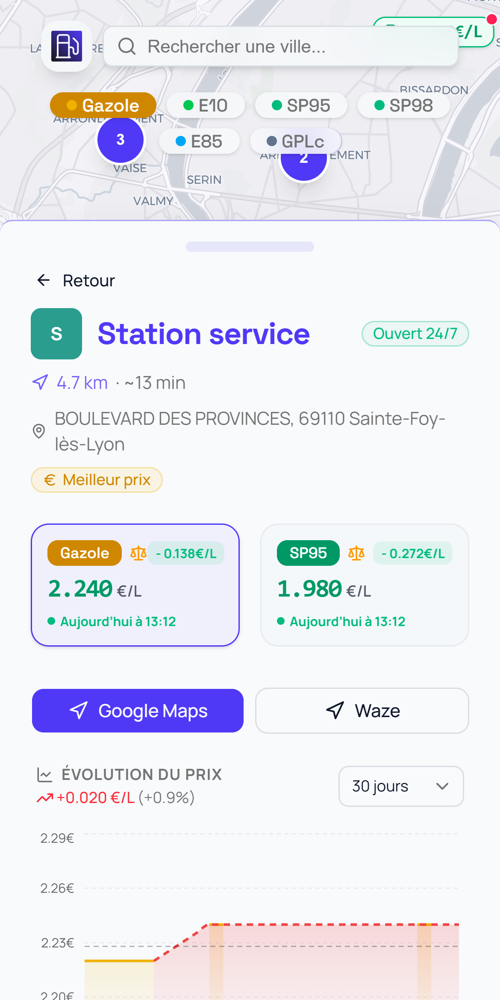
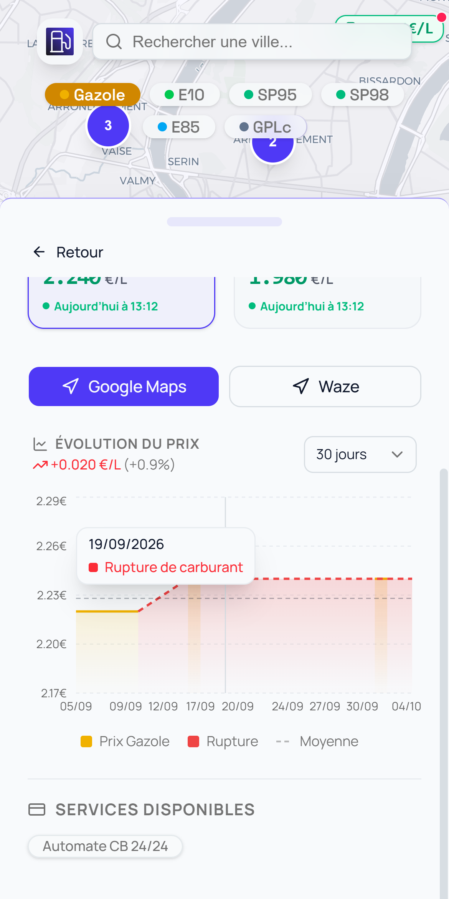

Le gazole a pris
2 centimes
en 20 jours.
Moyenne
en France2,377€/L
en France2,377€/L
Et votre
station ?
station ?
+ 0,019 €/L · moyenne nationale · 5 oct. 2026



Une tendance
sur chaque prix.
sur chaque prix.
Chaque carburant,
comparé à la médiane.
comparé à la médiane.
30 jours d'historique.
Ruptures comprises.
Ruptures comprises.